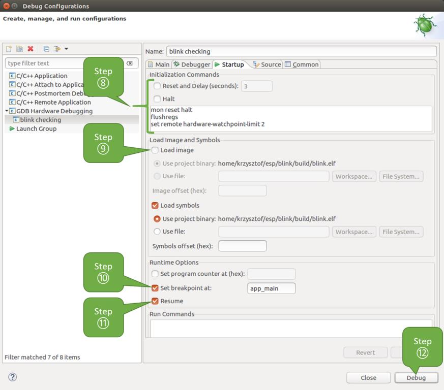

დებაგერის გამოყენება¶
ეს განყოფილება მოიცავს გამართვა ger-ის კონფიგურაციას და გაშვებას, როგორც დაბნელება ან ბრძანების ხაზირეკომენდებულია პირველ რიგში შეამოწმოთ, მუშაობს თუ არა გამართვა ger ბრძანების ხაზი და შემდეგ გადადით Eclipse-ის გამოყენებაზე.
დაბნელება¶
გამართვის ფუნქცია Eclipse-ის სტანდარტულ ინსტალაციაში უკვე ხელმისაწვდომია. კიდევ ერთი ვარიანტია ისეთი დანამატების გამოყენება, როგორიცაა „GDB Hardware Debugging“ დანამატი. ეს დანამატი საკმაოდ მოსახერხებელი აღმოჩნდა ჩვენთვის და გადავწყვიტეთ, რომ ამ სახელმძღვანელოში გამოგვეყენებინა.
დასაწყისისთვის, დააინსტალირეთ „GDB Hardware Debugging“ მოდული Eclipse-ის გახსნით და შემდეგ ბმულზე გადასვლით. Help > Install ახალი პროგრამული უზრუნველყოფა.
ინსტალაციის დასრულების შემდეგ, დააკონფიგურირეთ გამართვა ging სესია ქვემოთ მოცემული ნაბიჯების შესაბამისად. გაითვალისწინეთ, რომ კონფიგურაციის ზოგიერთი პარამეტრი ზოგადია, ზოგი კი პროექტის სპეციფიკური. ეს ნაჩვენები იქნება ქვემოთ, როდესაც „blink“-ის მაგალითის პროექტისთვის გამართვა ging-ს დააკონფიგურირებთ. თუ ეს უკვე არ გააკეთეთ, დაამატეთ ეს პროექტი Eclipse-ის სამუშაო სივრცეში განყოფილებაში მოცემული ინსტრუქციის შესაბამისად. Eclipse IDE-ს გამოყენებით აწყობა და ფლეშ-პროგრამირებაწყარო დაწყება/თვალის დახამხამება აპლიკაცია ხელმისაწვდომია მაგალითები ESP-IDF საცავის დირექტორია.
Eclipse-ში გადადით Run > Debug Configurationგაიხსნება ახალი ფანჯარა. ფანჯრის მარცხენა პანელში ორჯერ დააწკაპუნეთ „GDB აპარატურის გამართვა“-ზე (ან აირჩიეთ „GDB აპარატურის გამართვა“ და დააჭირეთ ღილაკს „ახალი“) ახალი კონფიგურაციის შესაქმნელად.
მარჯვნივ გამოტანილ ფორმაში შეიყვანეთ ამ კონფიგურაციის „სახელი:“, მაგ. „მოციმციმე თვალის შემოწმება“.
ქვემოთ მოცემულ „მთავარი“ ჩანართზე, „პროექტის:“ ქვეშ, დააჭირეთ ღილაკს „დათვალიერება“ და აირჩიეთ „მოციმციმე“ პროექტი.
შემდეგ ხაზში „C/C++ აპლიკაცია:“ დააჭირეთ ღილაკს „Browse“ და აირჩიეთ ფაილი „blink.elf“. თუ „blink.elf“ იქ არ არის, მაშინ, სავარაუდოდ, ეს პროექტი ჯერ არ არის აწყობილი. იხილეთ Eclipse IDE-ს გამოყენებით აწყობა და ფლეშ-პროგრამირება როგორ გავაკეთოთ ეს.
და ბოლოს, „აწყობა (საჭიროების შემთხვევაში) გაშვებამდე“-ში დააჭირეთ ღილაკს „ავტომატური აწყობის გამორთვა“.
ქვემოთ ნაჩვენებია 1-5 პუნქტებში შეყვანილი პარამეტრების მქონე ნიმუშის ფანჯარა.

GDB აპარატურის გამართვის კონფიგურაცია - მთავარი ჩანართი
დააჭირეთ ღილაკს „Debugger“. ველში „GDB Command“ შეიყვანეთ
xtensa-esp32-elf-gdbგამართვა 11-ის გამოსაძახებლად.შეცვალეთ „დისტანციური მასპინძლის“ ნაგულისხმევი კონფიგურაცია ბრძანებებით
3333„პორტის ნომრის“ ქვეშ.მე-6 და მე-7 პუნქტებში შეყვანილი კონფიგურაცია ნაჩვენებია შემდეგ სურათზე.

GDB აპარატურის გამართვის კონფიგურაცია - გამართვის ჩანართი
ბოლო ჩანართი, რომელიც მოითხოვს ნაგულისხმევი კონფიგურაციის შეცვლას, არის „გაშვება“. „ინიციალიზაციის ბრძანებების“ ქვეშ მოხსენით მონიშვნა „გადატვირთვა და შეფერხება (წამებში)“ და „შეჩერება“. შემდეგ, ქვემოთ მოცემულ ველში შეიყვანეთ შემდეგი სტრიქონები:
mon reset halt flushregs set remote hardware-watchpoint-limit 2
შენიშვნა
თუ გსურთ, რომ ფლეშ მეხსიერება ში სურათი ავტომატურად განახლდეს გამართვა ახალი სესიის დაწყებამდე, „ინიციალიზაციის ბრძანებების“ ტექსტური ველის დასაწყისში დაამატეთ შემდეგი ბრძანებების ხაზები:
mon reset halt mon program_esp ${workspace_loc:blink/build/blink.bin} 0x10000 verifyაღწერისთვის
program_espბრძანება იხილეთ ატვირთეთ განაცხადი გამართვა ging-ისთვის.„სურათისა და სიმბოლოების ჩატვირთვის“ ქვეშ მოხსენით მონიშვნა „სურათის ჩატვირთვის“ ოფციიდან.
იმავე ჩანართზე უფრო ქვემოთ, დააყენეთ საწყისი შესვენების წერტილი CPU-ების შესაჩერებლად გამართვა ger-ის მიერ გადატვირთვის შემდეგ. მოდული დააყენებს ამ შესვენების წერტილს „შესვენების წერტილის დაყენება:“-ში შეყვანილი ფუნქციის დასაწყისში. მონიშნეთ ეს პარამეტრი და შეიყვანეთ
app_mainმოწოდებულ ველში.შეამოწმეთ „განახლების“ ოფცია. ეს პროგრამას განაახლებს შემდეგ
mon reset haltგამოიძახება მე-8 წერტილის მიხედვით. პროგრამა შემდეგ გაჩერდება ჩასმულ წყვეტის წერტილზეapp_main.ქვემოთ მოცემულია 8-11 პუნქტებში აღწერილი კონფიგურაცია.
GDB აპარატურის გამართვის კონფიგურაცია - გაშვების ჩანართი
თუ „გაშვების“ თანმიმდევრობა ჩახლართულად გამოიყურება და შესაბამისი „ინიციალიზაციის ბრძანებები“ თქვენთვის გაუგებარია, შეამოწმეთ რას ნიშნავს გამართვა ger-ის გაშვების ბრძანებები? დამატებითი განმარტებისთვის.
თუ ადრე დაასრულეთ ESP32 Target-ის კონფიგურაცია ზემოთ აღწერილი ნაბიჯების შესასრულებლად, რათა სამიზნე ჩართული იყოს და მზად იყოს გამართვა ger-თან სასაუბროდ, გადადით გამართვა ging-ზე „Debug“ ღილაკზე დაჭერით. წინააღმდეგ შემთხვევაში, ცვლილებების შესანახად დააჭირეთ „Apply“-ს, დაბრუნდით ESP32 Target-ის კონფიგურაცია და დაბრუნდით აქ გამართვა სწავლის დასაწყებად.
როგორც კი 1-12 კონფიგურაციის ყველა ნაბიჯი შესრულდება, გაიხსნება Eclipse-ის ახალი პერსპექტივა სახელწოდებით „Debug“, როგორც ეს ნაჩვენებია ქვემოთ მოცემულ სურათზე.

გამართვის პერსპექტივა Eclipse-ში
თუ არ ხართ დარწმუნებული, თუ როგორ გამოიყენოთ GDB, შეამოწმეთ დაბნელება მაგალითი გამართვა ging სესიისთვის განყოფილებაში გამართვის მაგალითები.
ბრძანების ხაზი¶
- დაიწყეთ ქვემოთ აღწერილი ნაბიჯების შესრულებით ESP32 Target-ის კონფიგურაციაეს წინაპირობაა გამართვა სასწავლო სესიის დასაწყებად.
გახსენით ახალი ტერმინალის სესია და გადადით დირექტორიაში, რომელიც შეიცავს გამართვა ging-ის პროექტს, მაგ.
cd ~/esp/blink
გამართვა ger-ის გაშვებისას, თქვენ უნდა მიუთითოთ რამდენიმე კონფიგურაციის პარამეტრი და ბრძანება. ბრძანების ხაზში მათი ერთმანეთის მიყოლებით შეყვანის ნაცვლად, შექმენით კონფიგურაციის ფაილი და დაარქვით მას სახელი.
gdbinit:target remote :3333 set remote hardware-watchpoint-limit 2 mon reset halt flushregs thb app_main c
შეინახეთ ეს ფაილი მიმდინარე დირექტორიაში.
დამატებითი დეტალებისთვის, რა არის შიგნით
gdbinitფაილი, იხილეთ რას ნიშნავს გამართვა ger-ის გაშვების ბრძანებები?
ახლა თქვენ მზად ხართ GDB-ის გასაშვებად. ტერმინალში აკრიფეთ შემდეგი:
xtensa-esp32-elf-gdb -x gdbinit build/blink.elf
თუ წინა ნაბიჯები სწორად შესრულდა, თქვენ ნახავთ მსგავს ჟურნალს, რომელიც დასრულდება შემდეგი სიტყვებით:
(gdb)მოთხოვნა:user-name@computer-name:~/esp/blink$ xtensa-esp32-elf-gdb -x gdbinit build/blink.elf GNU gdb (crosstool-NG crosstool-ng-1.22.0-61-gab8375a) 7.10 Copyright (C) 2015 Free Software Foundation, Inc. License GPLv3+: GNU GPL version 3 or later <http://gnu.org/licenses/gpl.html> This is free software: you are free to change and redistribute it. There is NO WARRANTY, to the extent permitted by law. Type "show copying" and "show warranty" for details. This GDB was configured as "--host=x86_64-build_pc-linux-gnu --target=xtensa-esp32-elf". Type "show configuration" for configuration details. For bug reporting instructions, please see: <http://www.gnu.org/software/gdb/bugs/>. Find the GDB manual and other documentation resources online at: <http://www.gnu.org/software/gdb/documentation/>. For help, type "help". Type "apropos word" to search for commands related to "word"... Reading symbols from build/blink.elf...done. 0x400d10d8 in esp_vApplicationIdleHook () at /home/user-name/esp/esp-idf/components/esp32/./freertos_hooks.c:52 52 asm("waiti 0"); JTAG tap: esp32.cpu0 tap/device found: 0x120034e5 (mfg: 0x272 (Tensilica), part: 0x2003, ver: 0x1) JTAG tap: esp32.slave tap/device found: 0x120034e5 (mfg: 0x272 (Tensilica), part: 0x2003, ver: 0x1) esp32: Debug controller was reset (pwrstat=0x5F, after clear 0x0F). esp32: Core was reset (pwrstat=0x5F, after clear 0x0F). Target halted. PRO_CPU: PC=0x5000004B (active) APP_CPU: PC=0x00000000 esp32: target state: halted esp32: Core was reset (pwrstat=0x1F, after clear 0x0F). Target halted. PRO_CPU: PC=0x40000400 (active) APP_CPU: PC=0x40000400 esp32: target state: halted Hardware assisted breakpoint 1 at 0x400db717: file /home/user-name/esp/blink/main/./blink.c, line 43. 0x0: 0x00000000 Target halted. PRO_CPU: PC=0x400DB717 (active) APP_CPU: PC=0x400D10D8 [New Thread 1073428656] [New Thread 1073413708] [New Thread 1073431316] [New Thread 1073410672] [New Thread 1073408876] [New Thread 1073432196] [New Thread 1073411552] [Switching to Thread 1073411996] Temporary breakpoint 1, app_main () at /home/user-name/esp/blink/main/./blink.c:43 43 xTaskCreate(&blink_task, "blink_task", 512, NULL, 5, NULL); (gdb)
ყურადღება მიაქციეთ ქვემოდან მესამე სტრიქონს, რომელიც აჩვენებს გამართვა ger-ის გაჩერებას წყვეტის წერტილში, რომელიც დადგენილია gdbinit ფაილი ფუნქციაზე app_main()რადგან პროცესორი გაჩერებულია, LED ინდიკატორი არ უნდა ციმციმებდეს. თუ თქვენც ამას ხედავთ, მაშინ მზად ხართ გამართვა ის დამუშავების დასაწყებად.
თუ არ ხართ დარწმუნებული, თუ როგორ გამოიყენოთ GDB, შეამოწმეთ ბრძანების ხაზი მაგალითი გამართვა ging სესიისთვის განყოფილებაში გამართვის მაგალითები.